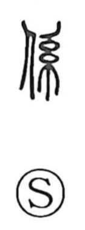

係

Uncategorized
Kun: kakari, kakaru, kakawaru | On: kei
connection ・ relation ・ to be connected ・ person in charge
Explanation
This character joins the person graph 人 with 系, the strands used for decorative threading. In ancient usage, adorning a person with such threads signified fastening them into a bond—linking and keeping them in a continuing connection. From that image, 係 came to express being tied to something or someone, and by extension the state of relationship or involvement seen in compounds like kankei, as well as the encumbrances hinted at in keirui. In Japanese it also yields kakari, the person responsible for a task or office, the one “attached” to a duty.